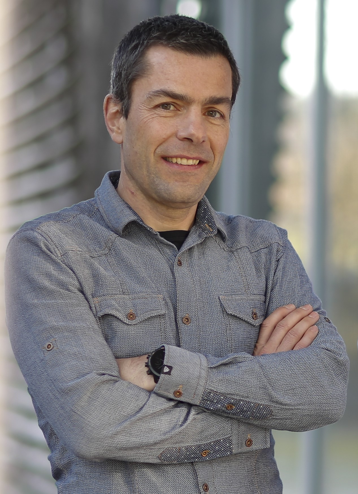

|  |
Methods, Collaboration, and Outreach Group (MCO), Product Development Data Sciences, F. Hoffmann-La Roche, Basel, Switzerland Linkedin Google scholar arxiv Last update of this page: 17th July 2024. |
I am a mathematical statistician. Through more than 20 years in various biostatistical roles I have complemented my thorough theoretical background with expertise in biostatistics. I am passionate about applying this expertise to solve problems in pharmaceutical drug development.
I am an Accredited European Statistician, a qualification issued by The Federation of European National Statistical Societies.
- Statistical methods to optimize clinical trial designs
- Advanced survival analysis
- Probability of success
- Estimands and causal inference
- Nonparametric statistics
- Postdoc in Mathematical Statistics, 2007, Stanford University, United States
- PhD in Mathematics (dissertation), 2006, University of Bern, Switzerland
- MSc in Mathematical Statistics and Actuarial Science, 2001, University of Bern, Switzerland